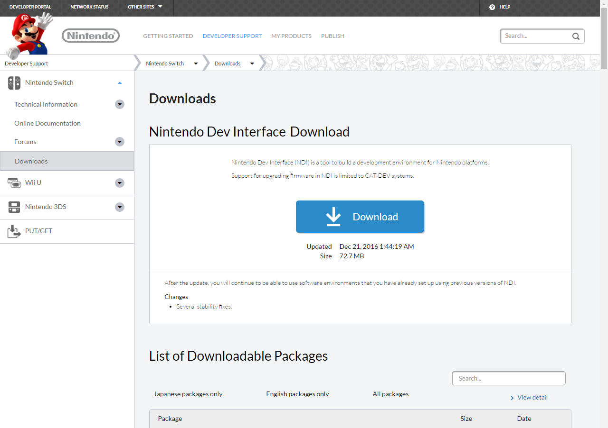
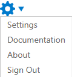
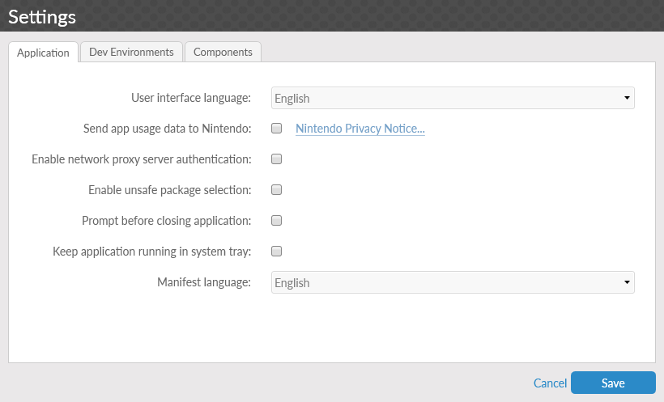
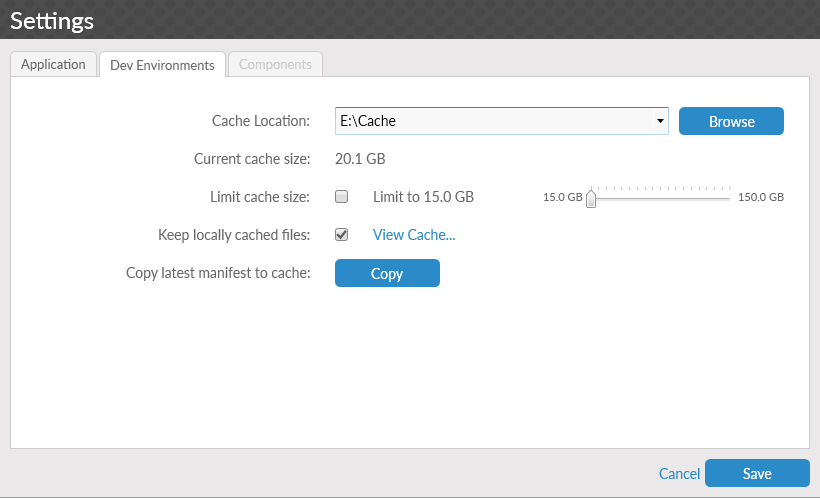
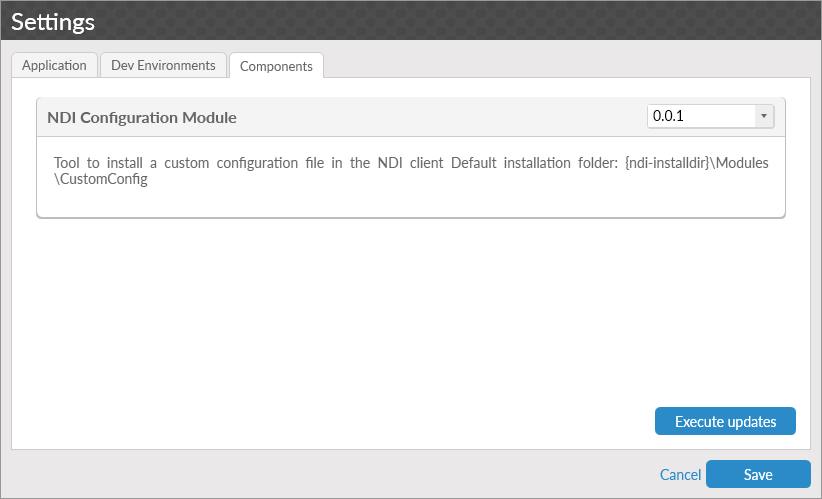

Installation
The NDI installer is available for download from the Nintendo Developer Portal Downloads page. After downloading the installer, run the included setup executable and follow the on-screen instructions to install NDI.
Note
While upgrading to a newer version of NDI is possible, it is not possible to downgrade to a previous version without uninstalling NDI completely.

Settings
When the application starts, you are presented with the NDI splash-screen and the Welcome screen.
The Welcome screen displays the tools that you can interact with to assist in development. However, it is recommended that you first access the Settings menu and configure the application for your needs.
Info
The first time you run NDI, you are automatically taken to the settings screen as you progress through the application.
To access the Settings menu, click the gear icon in the upper right of the window.

This list contains four options:
-
Settings: Opens the settings menu.
-
Documentation: Opens the directory where the NDI documentation is located.
-
About: Displays information about NDI and contact information.
-
Sign In / Sign Out: On first run, displays as Sign In and allows you to log in to the Nintendo Developer Portal with a Nintendo Developer ID. After a sign in has occurred, it changes to Sign Out. When Sign Out is selected, you are disconnected from the Nintendo Developer Portal.
Click Settings to open a window with the following tabs.
Application Tab

The Application tab allows you to configure elements of NDI. The options are as follows.
-
User interface language: Changes the display language of NDI.
-
Send app usage data to Nintendo: If enabled, usage data is reported to Nintendo to allow the support and improvement of NDI. The Nintendo Privacy Notice link opens a page that provides further details.
-
Enable network proxy server authentication: If enabled, when authentication with a proxy server is required, NDI saves the required information for future authentications. When NDI is started for the first time, this option is selected.
-
Enable unsafe package selection: If enabled, you are able to select packages that are not suitable or compatible with other selected packages when creating and updating environments. Unsafe package selection is occasionally used for specific high-risk installation scenarios. An unsafe selection may lead to unstable environments or data, it is not recommended to select this option.
-
Prompt before closing application: If enabled, a message displays on exiting the program that confirms the closing action.
-
Keep application running in system tray: If enabled, when NDI is closed using the close button in the upper right corner of the application window, the application minimizes to the system tray.
-
Manifest language: Software package descriptions are displayed in the selected language, if available.
Dev Environments Tab

The Dev Environments tab allows you to configure how environments are installed through NDI. The options are as follows.
-
Cache Location: The directory where files downloaded by the client are located.
-
Current cache size: Displays the total size of all files in the current Cache Location.
-
Limit cache size: If enabled, NDI controls the maximum amount of data that can be in the NDI cache. The slider to the right of the option determines the maximum size of the cache. Each time NDI is started while this option is enabled, files are removed from the cache until the total size of all files in the cache is below the selected value. Files are removed from oldest to newest.
-
Keep locally cached files: If enabled, files that are downloaded remain in the cache after NDI is closed.
-
View Cache: Opens the directory specified by Cache Location.
-
Copy latest manifest to cache: Creates a copy of the current manifest file in the current cache location.
The purpose of the cache is to save files after download so that they can be used to create environments at a later time. The cache location may be changed to another disk drive or partition that may have more storage space, separate from the location of installed files or environments.
Components Tab

The Components tab contains a list of NDI modules that are available on the currently connected server, and any modules that have previously been installed. Installed modules provide additional features to NDI, based on the individual module selected. To make selections, install, or reinstall these modules, select the appropriate option from the drop-down list box on the right and select Execute updates. In most cases, you should restart NDI after completing this process.
Note
The Components tab is only accessible when the Settings menu is opened from the Welcome screen.
Required Components
Some components allow NDI to function correctly or provide additional features to the application. These required components are downloaded automatically when connected to the server and are indicated when they are installed. Required components are displayed on the Components tab, but can not be uninstalled.
Saving
After you have confirmed your settings, click the Save button in the lower right to return to the main application. To make changes to your settings, you can return to the Settings menu on any screen where the gear icon is blue.
You can now begin using the Nintendo Dev Interface.